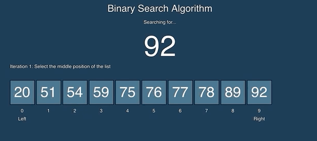

Overview
Binary search is a fast search algorithm.It is also known as half-interval search.
This
search algorithm works on the principle of divide and conquer. For this algorithm to
work properly, the data collection should be in the sorted form.
Binary search looks for a particular item by comparing the middle most item of the
collection. If a match occurs, then the index of item is returned. If the middle item is
greater than the item, then the item is searched in the sub-array to the left of the
middle item. Otherwise, the item is searched for in the sub-array to the right of the
middle item. This process continues on the sub-array as well until the size of the
subarray reduces to zero.
For example, Given a sorted array of 10 integers. We need to find the position
of element with the value 92.
Since it is 10 digit array, we find the mid index to be 10/5 and hence the element on that index will be
75.Since 75 is less than 92, all the elements before it and including it are rejected for further iteration
Now, taking the mid from the remaining array,the mid element now is 78 which is still less than 92 and hence all
the elements are rejected before and including it.
The mid element now becomes 89 which is less than 92 and is rejected.
The last one remaining is checked
which turns out to be the element we are finding, i.e 92
and hence we find the requied position of the element with value 92.

Binary
search is used to quickly find a value in a sorted sequence.It halves the searchable items and thus reduces the
count of comparisons.
to be made to very less numbers